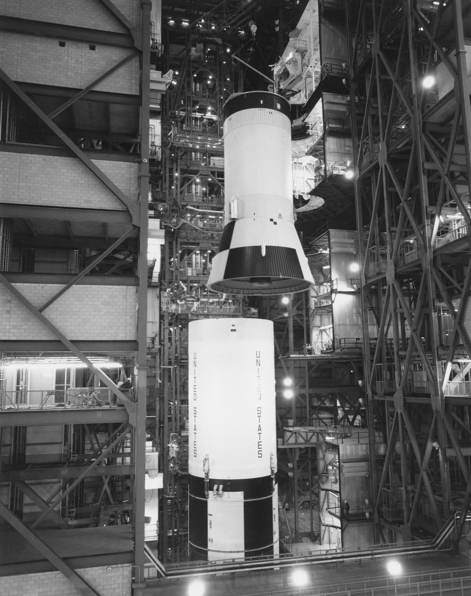

Stages — why no rocket has ever flown single-stage to orbit
Tsiolkovsky's equation makes single-stage-to-orbit possible only with impossibly light dry mass. Every orbital launcher in history has dropped at least one stage. Most drop two or three.
The mass ratio for orbit (~9.4 km/s of ∆v from a coastal launch site) is roughly 12-15 with the best chemical engines. That means 92-93% of a notional single-stage-to-orbit (SSTO) vehicle is propellant; the dry mass — tanks, engines, avionics, payload, recovery hardware — must fit inside the remaining 7-8%. No one has ever built one. The X-33 / VentureStar SSTO programme of the 1990s shut down when the composite hydrogen tank failed pressure-test. Skylon (UK, SABRE-based) is still on paper. Starship is sometimes described as SSTO-capable but flies as a two-stage vehicle for very good reasons: dropping the booster saves dry mass and lets the upper stage continue with much higher TWR-fed acceleration. Staging is the trick that turns the logarithmic rocket equation from impossible to merely difficult.
Two-stage architecture is the modern minimum. Falcon 9 (booster + second stage), Falcon Heavy (three-core booster + second stage), Starship (Super Heavy + Starship), Electron (kerolox first + kerolox second + sometimes a Curie kick stage), Neutron (planned), Terran R (planned). The booster does the heavy lifting through the dense lower atmosphere where high thrust matters more than Isp; the upper stage runs at lower TWR in vacuum where high Isp pays off. Why not three stages? Because each staging event is a discrete failure mode (separation pyrotechnics, hot-staging plume management, interstage debris) and modern engines are good enough to do the upper-stage burn in one go. The exceptions are usually GTO or interplanetary missions where a kick stage (Star 48, Briz-M, Fregat, YZ-1/2, Centaur as a third stage) gives a final precise burn — Voyager, New Horizons, Solar Orbiter, JUICE, every Mars rover.
Three-stage architecture was standard for the Apollo era because the engines of the day could not produce enough Isp or thrust to drop straight to two. Saturn V: S-IC kerolox booster (5 × F-1, ~2.5 minutes), S-II hydrolox sustainer (5 × J-2, ~6 minutes), S-IVB hydrolox upper (1 × J-2, two burns — one to circularise, one for trans-lunar injection). Soyuz still flies three stages plus four strap-on first-stage boosters in a 1957 architecture that is older than human spaceflight itself. China's Long March 3B/E and Long March 5 are 2.5-stage (core + strap-ons + upper) with a separate kick stage for GEO/escape. India's PSLV is uniquely four-stage with alternating solid and liquid — heritage from a 1970s programme that lacked any single propellant family capable of doing the whole job.
Staging happens in one of three ways. Pyro-bolt separation: explosive bolts fire, springs push the spent stage clear, then the upper stage ignites in the resulting gap. Used by almost everyone (Soyuz, Atlas, Ariane, Long March). Fire-in-the-hole / hot staging: the upper stage ignites *before* separation, blowing the booster away with its exhaust. Soviet (Soyuz, Proton) and now SpaceX (Starship) — it loses 1-2% Isp from the upper stage exhausting against the interstage but eliminates the dead-time during separation where gravity drag eats velocity. Pushed staging: the lower stage gives a small retro-burn to back out before the upper stage ignites — Falcon 9 between MECO and second-stage ignition is essentially this, plus a boost-back manoeuvre if the booster is being recovered. Each is a different trade between mechanical risk, gravity losses, and operational simplicity.

SEE IN THE APP
- /fleet Stage count per launcher: Falcon 9 (2), Soyuz (3 + strap-ons), Saturn V (3), SLS (1.5 + boosters + ICPS upper), Long March 5 (2 core + boosters + YZ-2 upper), Starship (2)